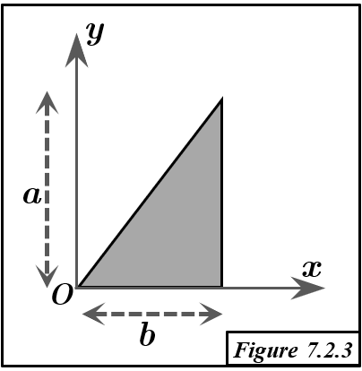

Solution Figure 7.2.3 : Triangle surfacique (OAB)

FIGURE 7.2.3 - Triangle surfacique O(0,0), A(b,a), B(b,0)
Méthode et Géométrie
- Objectif : Trouver le centroïde $G=(x_G, y_G, z_G)$ du triangle surfacique OAB.
- La surface étant dans le plan $z=0$, on a $z_G=0$.
- Méthode : Deuxième Théorème de Guldin.
- Principe : Le volume $V_{/\Delta}$ généré par la rotation d'une surface d'aire $S$ autour d'un axe $\Delta$ (ne la traversant pas) est $V_{/\Delta} = S \times (2\pi R_G)$. $R_G$ est la distance du centroïde G de $S$ à $\Delta$.
- Géométrie du Triangle OAB :
- Sommets : O(0,0,0), A(b,a,0), B(b,0,0).
- Description : Triangle rectangle en B.
- Côté OB (sur l'axe Ox) : de O(0,0) à B(b,0). Longueur $b$.
- Côté BA (parallèle à l'axe Oy) : de B(b,0) à A(b,a). Longueur $a$.
- Aire de la surface : $S_{OAB} = \frac{1}{2} \times \text{base (OB)} \times \text{hauteur (BA)} = \frac{1}{2} ba = \frac{ab}{2}$.
Calcul du Centroïde $G = (x_G, y_G, 0)$
1. Coordonnée $y_G$ (Rotation autour de l'axe Ox)
- Axe de rotation : Ox ($y=0$). Le côté OB est sur cet axe. Distance de G à Ox : $R_{G, Ox} = y_G$.
- Volume généré ($V_{/Ox}$) : La rotation du triangle OAB autour de Ox engendre un cône.
- Base : Disque (rayon $a$) par rotation de BA. Sommet : O(0,0). Hauteur : $b$.
- Calcul du volume du cône : $V_{/Ox} = \frac{1}{3} \pi a^2 b$.
- Application de Guldin : $V_{/Ox} = S_{OAB} \times (2\pi y_G) \implies \frac{1}{3} \pi a^2 b = \left(\frac{ab}{2}\right) \times (2\pi y_G) = \pi ab y_G$.
- Calcul de $y_G$ : $y_G = \frac{a}{3}$.
2. Coordonnée $x_G$ (Rotation autour de l'axe Oy)
Distance de G à Oy : $R_{G, Oy} = x_G$.
Méthode par décomposition des volumes de révolution (Guldin)
- Décomposition : $S_{OAB} = S_{Rect(OBA'(0,a)A)} - S_{Tr(OA'(0,a)A)}$.
- Volume généré $V_{OAB,/Oy}$ : $V_{OAB,/Oy} = V_{Rect,/Oy} - V_{Tr,/Oy}$.
- Rectangle $S_R = OBA'A$ : Rotation $\rightarrow$ Cylindre (rayon $b$, hauteur $a$). $V_{R,/Oy} = \pi b^2 a$.
- Triangle $S_{T1} = OA'A$ : Rotation autour de Oy (OA' sur Oy) $\rightarrow$ Cône (base rayon $b$, hauteur $a$). $V_{T1,/Oy} = \frac{1}{3}\pi b^2 a$.
- Volume pour $S_{OAB}$ : $V_{OAB,/Oy} = \pi ab^2 - \frac{1}{3}\pi ab^2 = \frac{2}{3}\pi ab^2$.
- Application de Guldin à $S_{OAB}$ : $V_{OAB,/Oy} = S_{OAB} \times (2\pi x_G) \implies \frac{2}{3}\pi ab^2 = \left(\frac{ab}{2}\right) \times (2\pi x_G) = \pi ab x_G$.
- Calcul de $x_G$ : $x_G = \frac{2b}{3}$.
Méthode alternative pour $x_G$ par Réflexion (utilisant le résultat de Fig. 7.2.1)
- Le triangle de la Figure 7.2.3 (OAB) est l'image par réflexion du triangle de la Figure 7.2.1 (O(0,0)-A$_1$(0,a)-B$_1$(b,0)) par rapport à l'axe $x=b/2$.
- Centroïde de Fig. 7.2.1 : $G_{7.2.1} = (x_{G1}, y_{G1}) = (b/3, a/3)$.
- Par réflexion, le centroïde $G_{7.2.3} = (x_G, y_G)$ de la Figure 7.2.3 a pour coordonnées :
- $x_G = b - x_{G1} = b - \frac{b}{3} = \frac{2b}{3}$.
- $y_G = y_{G1} = \frac{a}{3}$.
- Cela confirme $G_{7.2.3} = (2b/3, a/3, 0)$.
Résultat
Le centroïde G du triangle surfacique OAB (Fig 7.2.3) a pour coordonnées :
$$ x_G = \frac{2b}{3} $$
$$ y_G = \frac{a}{3} $$
$$ z_G = 0 $$
Soit $G = (2b/3, a/3, 0)$.
Conclusion
- Le centroïde du triangle OAB (Fig 7.2.3) est $G=(2b/3, a/3, 0)$.
- Ce résultat est cohérent avec la moyenne des coordonnées des sommets et la relation de symétrie avec la Figure 7.2.1.